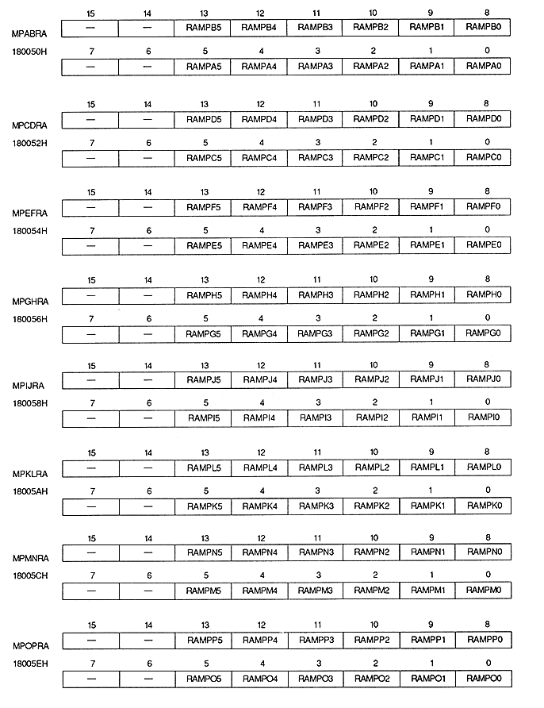

Return to previous page ｜ Return to menu ｜ Go to next page
-
■ Rotary scroll screen map register
- The rotation scroll screen map register specifies the start address of the pattern name table placed on each plane of the screen by the rotation parameter A and rotation parameter B. This is a write-only 16-bit register located at addresses 180050H to 18006EH. The value is cleared to 0 after power-on or reset, so be sure to set it.

Return to previous page ｜ Return to menu ｜ Go to next page